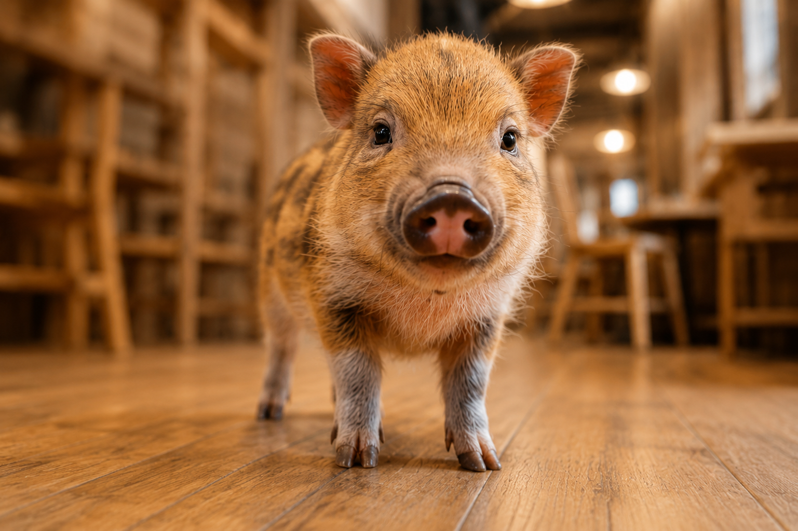

Concept
ごろごろ、のんびり、幸せ。
忙しい毎日に、ちょっとひと休み。気ままな2匹の子ぶたが、 お昼寝をしたり、時々お客様のそばに寄り添ったり。
「なんとなくぼんやり過ごす時間も、大切な時間。」 そんな気持ちを思い出せる場所です。
Aboutを詳しく見るConcept
忙しい毎日に、ちょっとひと休み。気ままな2匹の子ぶたが、 お昼寝をしたり、時々お客様のそばに寄り添ったり。
「なんとなくぼんやり過ごす時間も、大切な時間。」 そんな気持ちを思い出せる場所です。
Aboutを詳しく見る